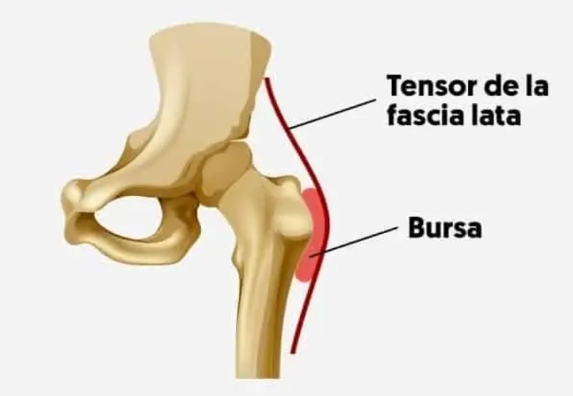

La bursitis es la inflamación de la bolsa sinovial. Las bolsas sinoviales son sacos gelatinosos que se encuentran en todo el cuerpo, incluyendo alrededor del hombro, el codo, la cadera, la rodilla y el talón. Estos sacos contienen una pequeña cantidad de líquido, y están ubicados entre los huesos y los tejidos blandos, actuando como almohadillas o amortiguadores para ayudar a reducir la fricción. Hay dos bolsas mayores en la cadera que típicamente sufren irritación e inflamación. Una bolsa cubre la protuberancia ósea del hueso de la cadera, llamada trocánter mayor. Otra bolsa, la bolsa del psoas-ilíaco, está ubicada en la parte interna (lado de la ingle) de la cadera. Cuando esta bolsa se inflama, la condición también es llamada bursitis de cadera, pero el dolor está ubicado en el área de la ingle.
Para diagnosticar la bursitis de cadera, el médico realizará un examen físico completo, buscando dolor a la palpación en el área del punto de la cadera. También se podrían realizar exámenes adicionales para descartar otras lesiones o condiciones posibles. Estos exámenes pueden incluir estudios con imágenes, como rayos X, tomografías de hueso y resonancia magnética (MRI).
El tratamiento inicial para la bursitis no involucra cirugía. Algunos de los tratamientos no quirúrgicos que se pueden realizar son:
Si la bolsa permanece inflamada y dolorosa después de intentar todos los tratamientos no quirúrgicos, su médico podría recomendar la remoción quirúrgica de la bolsa. Después de la cirugía, puede esperarse un período de rehabilitación corto. La experiencia de la mayoría de los pacientes es que el uso de un bastón o de muletas durante un par de días ayuda.
Para más información, consulte el siguiente vídeo:
Marta Nadal Herraiz y Jazmín Ramírez Agudelo
©Copyright. Todos los derechos reservados. 2022
Puedes volver a la página principal, haciendo click en logo o a través del siguiente enlace:aquí
También le puede interesar: UAlicante